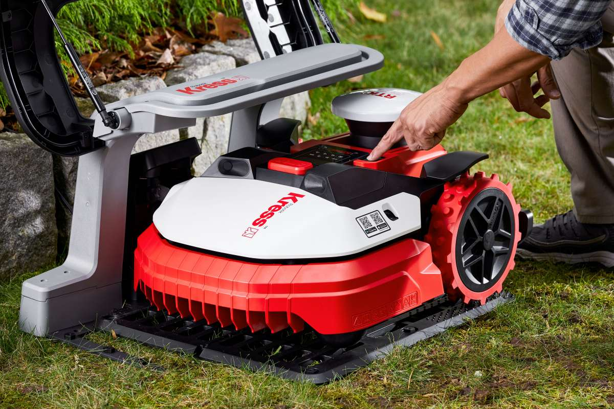
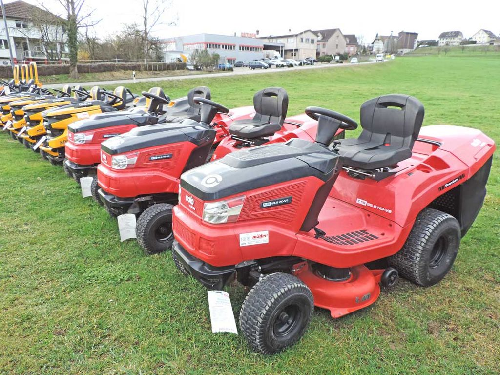
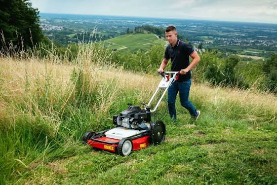

Willkommen bei BFL Burow – Werkstatt, Landtechnik & Gartengeräte. Mit jahrzehntelanger Erfahrung und frischem Schwung durch Werkstattleiter Markus bieten wir Ihnen ehrlichen Kfz- & Landtechnik-Service aller Marken, Baggerarbeiten, Schleifservice für Messer & Scheren sowie Fachberatung für Qualitäts-Gartengeräte von Kress, Solo und Herkules.
Schnelle Hilfe von Markus & Team
Als gelernter Kfz-Mechaniker legt Markus größten Wert auf handwerkliche Präzision, moderne Fehlerdiagnose und transparente Absprachen. Wir warten und reparieren Pkw, Transporter und Anhänger aller Marken nach strengen Herstellervorgaben.
Regelmäßige Prüftage im Haus inkl. gründlicher Durchsicht im Vorfeld.
Fehlerspeicher auslesen, Steuergeräte prüfen & Sensorik instandsetzen.
Beläge, Scheiben, Stoßdämpfer und Lenkungsteile in Erstausrüsterqualität.
Wartung, Dichtheitsprüfung & Kältemittel-Befüllung (R134a & R1234yf).
Vom saisonalen Radwechsel über Reifenreparaturen bis hin zu Neureifen aller namhaften Hersteller. Auch Montage von Transporter- und Landwirtschaftsreifen!
Sie planen ein Bau- oder Gartenprojekt? Wir führen Baggerarbeiten mit erfahrenem Fahrer für Sie aus – oder vermieten leistungsfähige Baumaschinen für Selbermacher!
Keine Zeit oder Erfahrung, selbst auf dem Bagger zu sitzen? Wir erledigen Ihre Erdarbeiten sauber, schnell und termintreu:
Für Bauherren, Gartenfreunde und Betriebe: Mieten Sie gepflegte Profigeräte zu fairen Tages- und Wochenendtarifen:
Verkauf, Einweisung, Zubehör und werkstatteigener Kundendienst: Wir setzen auf bewährte Spitzenmarken statt Wegwerf-Baumarktware.

Kress Robotik & AkkuPionier der kabelungebundenen RTK-Mähroboter (ohne Begrenzungsdraht!) sowie extrem langlebige 60V-Akkusysteme für anspruchsvolle Privatgärten und Großflächen.

Solo by AL-KOTraditionelle deutsche Ingenieurskunst für Garten, Forst und Landwirtschaft. Bekannt für langlebige Benzin- & Akku-Kettensägen, Rasentraktoren und Profi-Spritzen.

Herkules MotorgeräteSpezialist für anspruchsvolles Gelände, Gestrüpp, Hanglagen und Großflächen. Perfekt für Landwirte, Kommunen und Hausbesitzer mit großen Grundstücken.
Stumpfe Klingen reißen statt zu schneiden und beschädigen Pflanzen oder Materialien. Bringen Sie Ihr Schneidwerkzeug einfach bei uns in Burow vorbei:
Ein geplatzter Schlauch legt Traktor, Bagger oder Ladekran lahm. Wir verpressen Hydraulikschläuche schnell und passgenau direkt in unserer Werkstatt:
BFL Burow · Seltzer Straße 4, 17089 Burow · Zentral an der B96